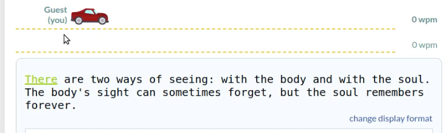
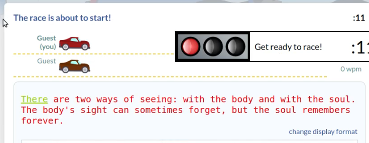
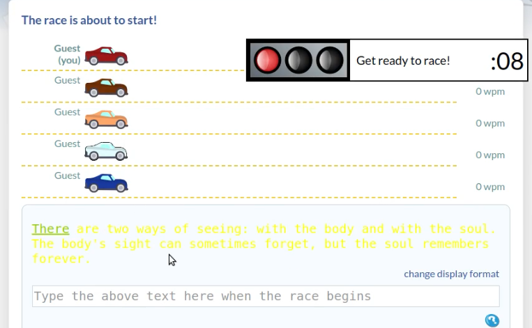
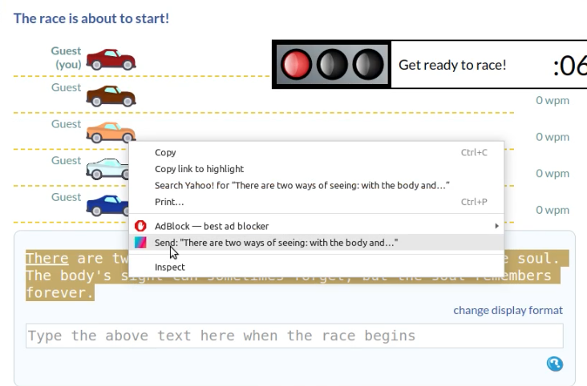
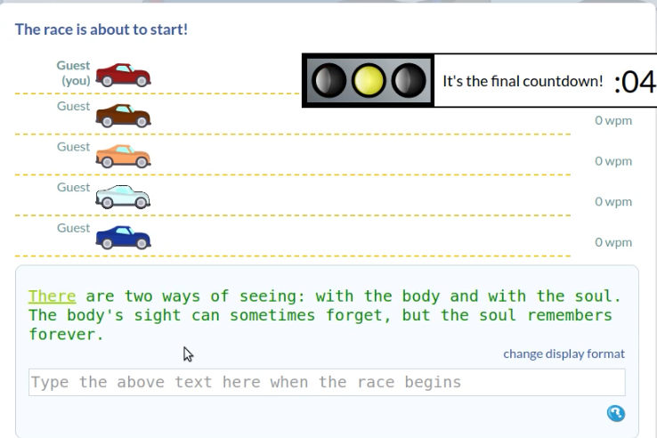
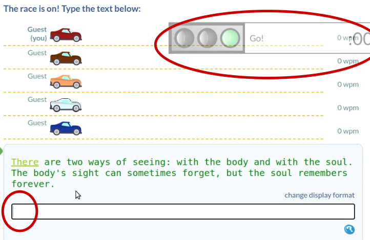
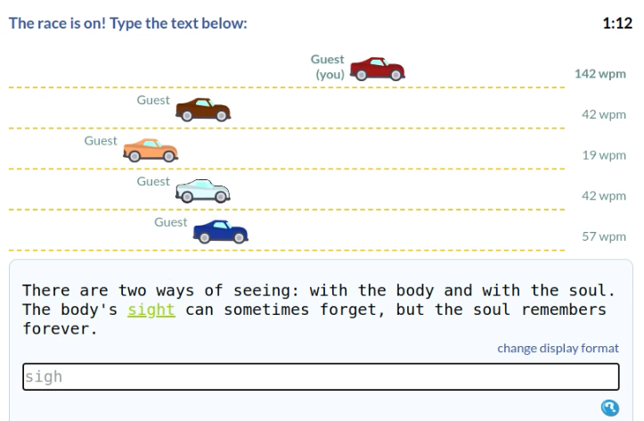
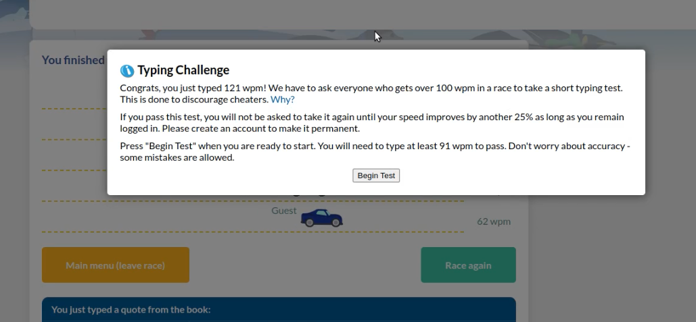

1) At game start, the text will be black indicating they are not yet selectable

2) Wait until the text turns red, which indicates they are now selectable.

3) Initialize the script by pressing the "/" key once, the text will turn yellow

4)Right click the text, navigate to the 'Send: "your text"' option and left click'

5) Left click the main body, off the text, to redisplay the yellow color. Press the "/" once again. The text will turn green indicating you are ready to race.

6) when the countdown reaches zero, the input will automatically be focused. Pressing or holding "/" will enter the letters into the input field.
NOTE: It's suggested to make a few test key presses to ensure the script is operating correctly


7) Once you have completed the race, a bot detection warning will appear. This is the extent of the script. Tell your friends the "race again" option isn't working, then close and reload the page to race again.

Congrats, you are now a TypeRacer God!